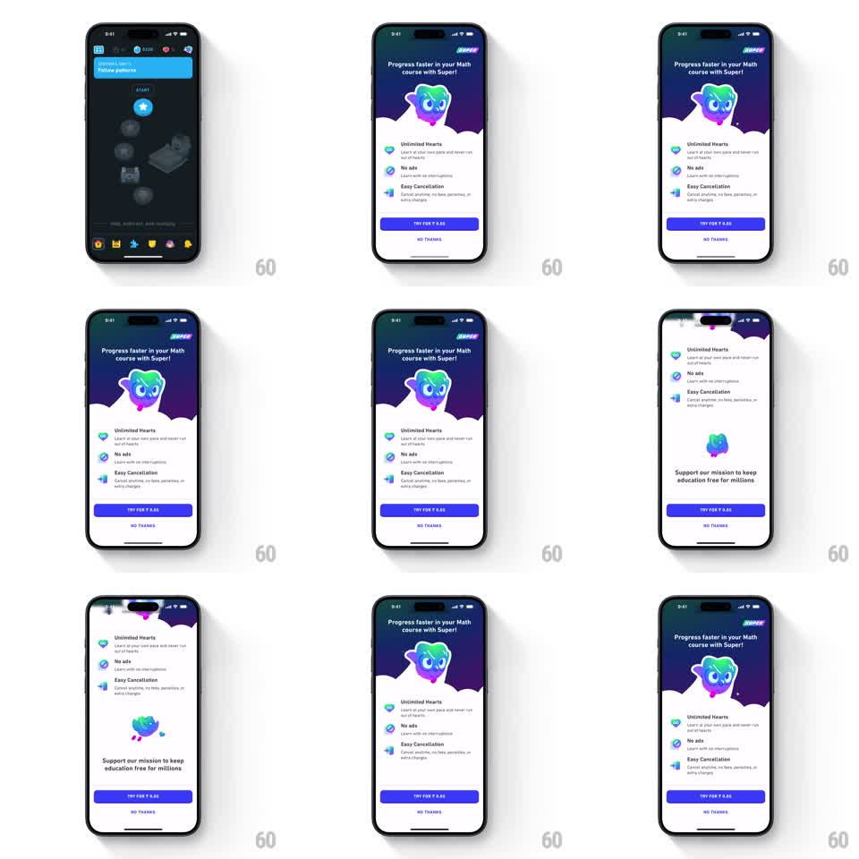

Media
Frame-by-frame

Rebuild this interaction 1:1: Duolingo's Try Super paywall - a scrollable premium page with a purple gradient hero and floating gradient owl, a benefit checklist, and a sticky TRY FOR ₹0.00 button that stays pinned while content scrolls under it.

Rebuild this interaction 1:1: Duolingo's Try Super paywall - a scrollable premium page with a purple gradient hero and floating gradient owl, a benefit checklist, and a sticky TRY FOR ₹0.00 button that stays pinned while content scrolls under it.
## Integration
Integration: stack-agnostic spec - springs given as stiffness/damping, timed motions as duration + curve; map every value to your framework and animation library of choice.
## Scene
Page opens over the course screen. Hero: deep purple gradient panel with a wave-cut bottom edge, iridescent gradient owl floating center, headline "Progress faster in your Math course with Super!" and the SUPER badge top right. Body: benefit list with check icons (Unlimited Hearts, No ads, Easy Cancellation) and footer copy with a small owl ("Support our mission to keep education free for millions"). Fixed bottom bar: full-width purple TRY FOR ₹0.00 button with NO THANKS text button beneath.
## Motion spec
Pattern: scrollable paywall with floating hero mascot and sticky CTA.
- Page entrance: slides up over the course screen (translateY 100% to 0, spring stiffness ~300, damping ~28).
- The hero owl floats continuously (translateY +-10px sine, ~2.5s) and its gradient shimmers (background-position sweep, ~3s linear loop).
- Scrolling is content-under-CTA: the hero wave and benefits scroll naturally while the button bar stays pinned, casting a soft top shadow once content passes beneath it.
- Benefit rows stagger in on first paint (translateY 12px to 0, opacity 0 to 1, 200ms each, 80ms apart).
## Calibration
- The sticky bar is the conversion anchor - it must never scroll away or be covered.
- Hero float is gentle; amplitude over 12px reads as seasick against scrolling.
## Reduced motion
Owl static, shimmer off; page entrance and staggers become 150ms fades.
## Don't miss
- The hero's bottom edge is a wave mask, not a straight cut - the wave silhouette scrolls away with the hero.
- The owl's gradient matches the SUPER wordmark gradient.